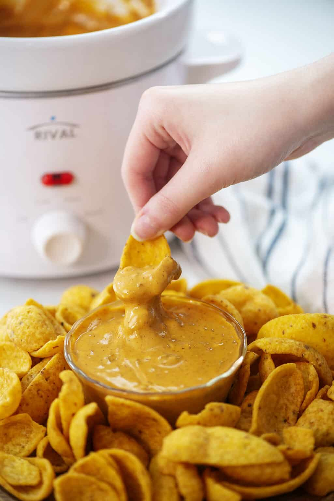
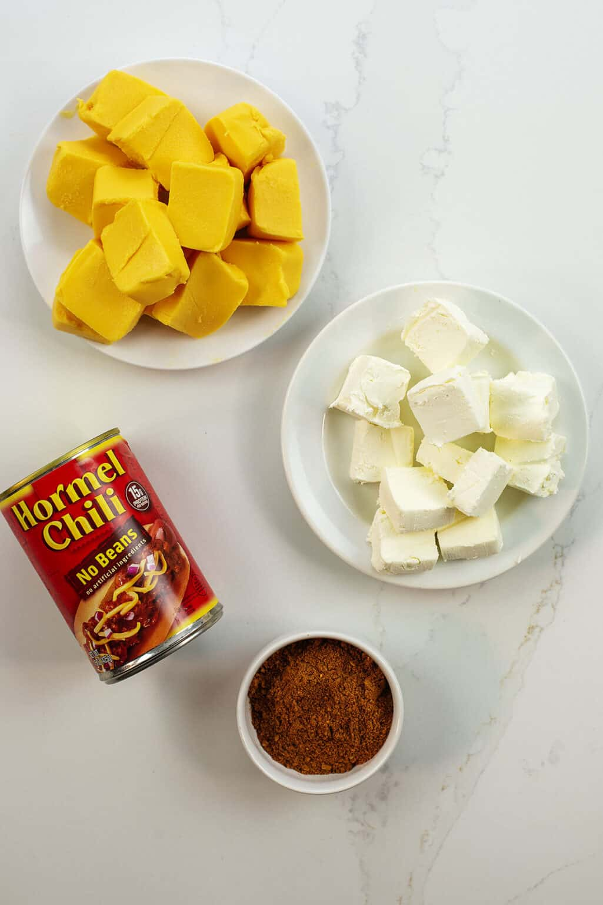

Description
Chili Dip is a creamy, cheesy appetizer that is perfect for game days, parties, or family gatherings. Made with only a few simple ingredients, it comes together quickly and is always a crowd favorite.
The rich combination of chili and melted cheeses creates a savory dip that pairs perfectly with tortilla chips, corn chips, or fresh vegetables.
Ingredients

- 16 oz Velveeta cheese, cubed
- 8 oz cream cheese, cubed
- 1 can chili of your choice
- 1 packet chili seasoning
Instructions
- Cut the Velveeta and cream cheese into small cubes.
- Add the chili to a crockpot set on low heat.
- Stir in both cheeses and the chili seasoning.
- Mix occasionally as the cheese melts.
- Cook until smooth and creamy.
- Serve warm with your favorite chips.